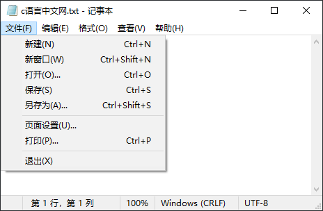
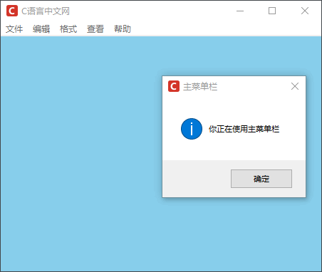
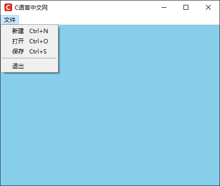
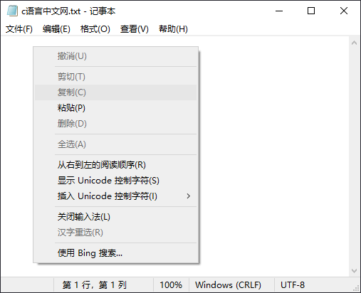
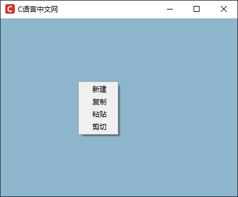
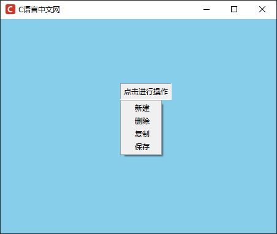

Tkinter Menu菜单控件
Menu 控件（菜单控件）可以说是 GUI 中“精髓所在”，它以可视化的方式将一系列的“功能选项卡”进行分组，并在每个分组下又“隐藏”了许多其他的“选项卡”。当打开菜单时，这些选项卡就会“显式”的呈现出来，方便用户进行选择，比如 Windows 系统中记事本文件（.txt文件类型）的界面：
通过使用菜单控件（Menu）可以充分地节省有限的窗口区域，让我们的界面更加简洁优雅，避免臃肿、混乱。
Tkinter Menu 控件提供了三种类型的菜单，分别是：topleve（主目录菜单）、pull-down（下拉式菜单）、pop-up（弹出式菜单，或称快捷式菜单）。
下表列出创建菜单时用到的相关方法，如下所示：
除了上述方法之外，Menu 控件也提供了一些其他方法来操作菜单项，比如删除菜单项、获取菜单项、设置指定的菜单项等，如下表所示：
下面对 Menu 控件的 options 参数做简单地介绍，如下所示：
如上图所示，当点击主目录中的任意一个菜单选项时都会跳出一个消息对话框。
下面继续仿照“记事本”的相关功能来创建下拉菜单，示例如下：
Tkinter Menu 控件同样可以是实现上述功能，而且并不复杂，示例如下：
下面看一组简单使用示例：

图1：Menu菜单界面
图1：Menu菜单界面
通过使用菜单控件（Menu）可以充分地节省有限的窗口区域，让我们的界面更加简洁优雅，避免臃肿、混乱。
Tkinter Menu 控件提供了三种类型的菜单，分别是：topleve（主目录菜单）、pull-down（下拉式菜单）、pop-up（弹出式菜单，或称快捷式菜单）。
下表列出创建菜单时用到的相关方法，如下所示：
| 方法 | 说明 |
|---|---|
| add_cascade(**options) | 添加一个父菜单，将一个指定的子菜单，通过 menu 参数与父菜单连接，从而创建一个下拉菜单。 |
| add_checkbutton(**options) | 添加一个多选按钮的菜单项 |
| add_command(**options) | 添加一个普通的命令菜单项 |
| add_radiobutton(**options) | 添加一个单选按钮的菜单项 |
| add_separator(**options) | 添加一条分割线 |
| add(add(itemType, options)) |
添加菜单项，此处 itemType 参数可以是以下几种："command"、"cascade"， "checkbutton"、"radiobutton"、"separator" 五种，并使用 options 选项来设置 菜单其他属性。 |
除了上述方法之外，Menu 控件也提供了一些其他方法来操作菜单项，比如删除菜单项、获取菜单项、设置指定的菜单项等，如下表所示：
| 方法 | 说明 |
|---|---|
| delete(index1, index2=None) |
1. 删除 index1 ~ index2（包含）的所有菜单项 2. 如果忽略 index2 参数，则删除 index1 指向的菜单项 |
| entrycget(index, option) | 获得指定菜单项的某选项的值 |
| entryconfig(index, **options) | 设置指定菜单项的选项 |
| index(index) | 返回与 index 参数相应的选项的序号 |
| insert(index, itemType, **options) |
插入指定类型的菜单项到 index 参数指定的位置，类型可以是 是："command"，"cascade"，"checkbutton"，"radiobutton" 或 "separator" 中的一个，或者也可以使用 insert_类型() 形式来， 比如 insert_cascade(index, **options)..等 |
| invoke(index) | 调用 index 指定的菜单项相关联的方法 |
| post(x, y) | 在指定的位置显示弹出菜单 |
| type(index) | 获得 index 参数指定菜单项的类型 |
| unpost() | 移除弹出菜单 |
| yposition(index) | 返回 index 参数指定的菜单项的垂直偏移位置 |
下面对 Menu 控件的 options 参数做简单地介绍，如下所示：
| 属性 | 说明 |
|---|---|
| accelerator |
1. 设置菜单项的快捷键，快捷键会显示在菜单项目的右边，比如 accelerator = "Ctrl+O" 表示打开； 2. 注意，此选项并不会自动将快捷键与菜单项连接在一起，必须通过按键绑定来实现 |
| command | 选择菜单项时执行的 callback 函数 |
| label | 定义菜单项内的文字 |
| menu | 此属性与 add_cascade() 方法一起使用，用来新增菜单项的子菜单项 |
| selectcolor | 指定当菜单项显示为单选按钮或多选按钮时选择中标志的颜色 |
| state | 定义菜单项的状态，可以是 normal、active 或 disabled |
| onvalue/offvalue |
1. 默认情况下，variable 选项设置为 1 表示选中状态，反之设置为 0，设置 offvalue/onvalue 的值可以自定义未选中状态的值 2. |
| tearoff |
1. 如果此选项为 True，在菜单项的上面就会显示一个可选择的分隔线； 2. 注意：分隔线会将此菜单项分离出来成为一个新的窗口 |
| underline | 设置菜单项中哪一个字符要有下画线 |
| value |
1. 设置按钮菜单项的值 2. 在同一组中的所有按钮应该拥有各不相同的值 3. 通过将该值与 variable 选项的值对比，即可判断用户选中了哪个按钮 |
| variable | 当菜单项是单选按钮或多选按钮时，与之关联的变量 |
1）创建主目录菜单
主目录菜单也称之为“顶级菜单”，下拉菜单等其他子菜单的都需要建立在“顶级菜单”的基础之上，下面示例创建了一个类似于“记事本”界面的程序，代码如下：
from tkinter import *
import tkinter . messagebox
#创建主窗口
win = Tk()
win.config(bg='#87CEEB')
win.title("C语言中文网")
win.geometry('450x350+300+200')
win.iconbitmap('C:/Users/Administrator/Desktop/C语言中文网logo.ico')
# 绑定一个执行函数，当点击菜单项的时候会显示一个消息对话框
def menuCommand() :
tkinter.messagebox.showinfo("主菜单栏","你正在使用主菜单栏")
# 创建一个主目录菜单，也被称为顶级菜单
main_menu = Menu (win)
#新增命令菜单项，使用 add_command() 实现
main_menu.add_command (label="文件",command=menuCommand)
main_menu.add_command (label="编辑",command=menuCommand)
main_menu.add_command (label="格式",command=menuCommand)
main_menu.add_command (label="查看",command=menuCommand)
main_menu.add_command (label="帮助",command=menuCommand)
#显示菜单
win.config (menu=main_menu)
win.mainloop()
程序 运行结果如下：

图2：Menu 控件创建主菜单
图2：Menu 控件创建主菜单
如上图所示，当点击主目录中的任意一个菜单选项时都会跳出一个消息对话框。
2) 创建下拉菜单
下拉菜单时主菜单的重要组成部分，也是用户选择相关命令的重要交互界面，下拉菜单的创建方式也非常简单，不过需要我们注意，下拉菜单是建立的主菜单（即顶级菜单）的基础之上的，并非主窗口之上，这一点千万不要搞混，否则创建下拉菜单会失败。下面继续仿照“记事本”的相关功能来创建下拉菜单，示例如下：
#创建一个下拉式菜单
from tkinter import *
import tkinter .messagebox
#创建主窗口
win = Tk()
win.config(bg='#87CEEB')
win.title("C语言中文网")
win.geometry('450x350+300+200')
win.iconbitmap('C:/Users/Administrator/Desktop/C语言中文网logo.ico')
#创建一个执行函数，点击下拉菜单中命令时执行
def menuCommand() :
tkinter .messagebox .showinfo("下拉菜单", "您正在使用下拉菜单功能")
#创建主目录菜单（顶级菜单）
mainmenu = Menu (win)
#在顶级菜单上新增"文件"菜单的子菜单，同时不添加分割线
filemenu = Menu (mainmenu, tearoff=False)
#新增"文件"菜单的菜单项，并使用 accelerator 设置菜单项的快捷键
filemenu.add_command (label="新建",command=menuCommand,accelerator="Ctrl+N")
filemenu.add_command (label="打开",command=menuCommand, accelerator="Ctrl+O")
filemenu.add_command (label="保存",command=menuCommand, accelerator="Ctrl+S")
# 添加一条分割线
filemenu.add_separator ()
filemenu.add_command (label="退出",command=win. quit)
#在主目录菜单上新增"文件"选项，并通过menu参数与下拉菜单绑定
mainmenu.add_cascade (label="文件",menu=filemenu)
# 将主菜单设置在窗口上
win.config (menu=mainmenu)
# 绑定键盘事件，按下键盘上的相应的键时都会触发执行函数
win.bind ("<Control-n>",menuCommand)
win. bind ("<Control-N>", menuCommand)
win.bind ("<Control-o>",menuCommand)
win. bind ("<Control-O>", menuCommand)
win. bind ("<Control-s>", menuCommand)
win.bind ("<Control-S>",menuCommand)
# 显示主窗口
win.mainloop()
程序运行解结果如下：

图3：Menu 控件下拉菜单
图3：Menu 控件下拉菜单
3) 创建弹出菜单栏
弹出式菜单栏，也称为快捷式菜单栏，比如通过点击鼠标右键弹出一个菜单栏，其中包含一些常用的选项卡，如复制、粘贴等，如下所示：在记事本的空白处点击鼠标右键会弹出一个菜单栏。

图4：弹出式菜单栏
图4：弹出式菜单栏
Tkinter Menu 控件同样可以是实现上述功能，而且并不复杂，示例如下：
import tkinter as tk
root = tk.Tk()
root.config(bg='#8DB6CD')
root.title("C语言中文网")
root.geometry('400x300')
root.iconbitmap('C:/Users/Administrator/Desktop/C语言中文网logo.ico')
def func():
print('您通过弹出菜单执行了命令')
# 创建一个弹出菜单
menu = tk.Menu(root, tearoff=False)
menu.add_command(label="新建", command=func)
menu.add_command(label="复制", command=func)
menu.add_command(label="粘贴", command=func)
menu.add_command(label="剪切", command=func)
# 定义事件函数
def command(event):
# 使用 post()在指定的位置显示弹出菜单
menu.post(event.x_root, event.y_root)
# 绑定鼠标右键，这是鼠标绑定事件
# <Button-3>表示点击鼠标的右键，1 表示左键，2表示点击中间的滑轮
root.bind("<Button-3>", command)
root.mainloop()
程序运行结果如下：

图5：Menu控件弹出菜单
图5：Menu控件弹出菜单
4) 菜单按钮控件
Menubutton（菜单按钮控件）是一个与 Menu 控件相关联的按钮，当我们按下按钮的时候下拉菜单就会自动弹出。通过 Menubutton 创建的菜单按钮可以自由地放置在窗口中的任意位置，从而提高了 GUI 界面的灵活性。下面看一组简单使用示例：
from tkinter import *
win=Tk()
win.config(bg='#87CEEB')
win.title("C语言中文网")
win.geometry('450x350+300+200')
win.iconbitmap('C:/Users/Administrator/Desktop/C语言中文网logo.ico')
#创建一个菜单按钮
menubtn=Menubutton(win, text='点击进行操作', relief='sunk')
# 设置位置（布局）
menubtn.grid(padx=195, pady=105)
#添加菜单,使用 tearoff 参数不显示分割线
filemenu=Menu(menubtn,tearoff = False)
filemenu.add_command(label='新建')
filemenu.add_command(label='删除')
filemenu.add_command(label='复制')
filemenu.add_command(label='保存')
# 显示菜单，将菜单命令绑定在菜单按钮对象上
menubtn.config(menu=filemenu)
win.mainloop()
程序运行结果如下：

图6：Menubutton菜单按钮
图6：Menubutton菜单按钮
关注公众号「站长严长生」，在手机上阅读所有教程，随时随地都能学习。内含一款搜索神器，免费下载全网书籍和视频。

微信扫码关注公众号